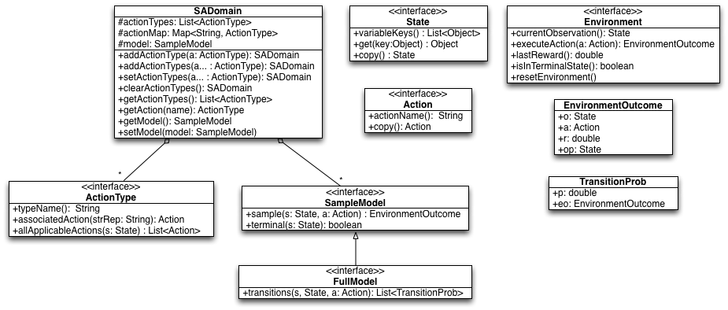

Tutorial: Building a Domain
To define your own MDP in BURLAP that can then be used with BURLAP's planning or learning algorithms, you will want to familiarize yourself with the following Java interfaces and data structures. Here we will give a brief review of what each these are, and in the subsequent sections we will be implenting the interfaces to define our grid world. A UML diagram of these elements is shown in the below figure.

Figure: UML Digram of the Java interfaces/classes for an MDP definition.
- SADomain - A data structure that stands for "single agent domain". This data structure stores information about an MDP that you will define and is typically passed to different planning or learning algorithms.
- State - Implement this interface to define the state variables of your MDP state space. An instace of this object will specify a single state from the state space.
- Action - Implement this interface to define a possible action that the agent can select. If your MDP action set is discrete and unparameterized, you may consider using the provided concrete implementation SimpleAction, which defines an aciton entirely by a single String name
- ActionType - Implement this interface to define a kind of Java factory for generating your Actions. In particular, this interface allows you define preconditions for actions. Actions with preconditions are actions that the agent can only select/execute in some states, and not others. It also allows you to specify which kinds of parameterizations of your actions are allowable in a state, if your actions are parameterized. Often, MDPs have unparameterized actions that can be executed in any state (no precondtions). In such cases, you should consider the provided concrete implementation UniversalActionType.
SampleModel - Implement this interface to define the model of your MDP. This inferface only requires you to implement methods that can sample a transition: spit back out a possible next state and reward given a prior state and action taken. Some planning algorithms, however, require more information; they may require being able to enumerate the set of possible transitions and their probability of occurring. If you wish to support these kinds of algorithms, then you will instead want to implement the FullModel interface that extends the SampleModel interface with a method for enumerating the transition probability distribution.
Note that if you are defining a learning problem in which an agent interacts with an external environment from BURLAP, it may not be possible to define even a SampleModel. For example, if you're going to use BURLAP to control robots via reinforcement learning, it might not be possible for you to specify a model of reality in a meanginful way (or it might simply be unncessary). In these cases, the model can be omitted from the MDP description and instead you'll want to implement a custom Environment instance, described next.
- Environment - An MDP defines the nature of an environment, but ultimately, an agent will want to interact with an actual environment, either through learning or to execute a policy it computed from planning for the MDP. An environment has a specific state of the world that the agent can only modify by using the MDP actions. Implement this interface to provide an environment with which BURLAP agents can interact. If you defined the MDP yourself, then you'll probably don't want to implement Environment yourself and instead use the provided concreate SimulatedEnvironment class, which takes an SADomain with a SampleModel, and simulates an environment for it.
- EnvironmentOutcome - A tuple that contains a prior state/observation, an action taken in that state, a reward recieved, and a next state/observation to which the environment transitioned. This object is typically returned by an Environment instance when an action is taken, or from a SampleModel when you sample a transition.
- TransitionProb - A tuple containing a double and an EnvironmentOutcome object, which specifies the probability of the transition specified by EnvironmentOutcome occurring. Typically, a list of these objects is returned by a FullModel instance when querying it for the transition probability distribution.